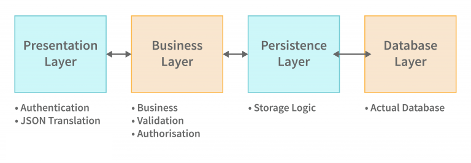

Spring Boot Layers
The spring boot consists of the following four layers:
- Presentation Layer – Authentication & Json Translation
- Business Layer – Business Logic, Validation & Authorization
- Persistence Layer – Storage Logic
- Database Layer – Actual Database

Presentation Layer: A JSON structure is made up of viewpoints. A front layer is what is seen from the outside and a back layer is where the structure is built from viewpoints. It interprets JSON and handles authentication and HTTP requests. After authentication, it enters the business layer for further processing.
Business Layer: As part of business logic, it manages all of the business decisions and performs the business validation and consent. For example, only admins may modify the customer’s account.
Persistence Layer: All of the storage logic in this program, including database questions, is accounted for in this portion of code. It also translates between database rows and company items.
Database Layer: The structure is constructed in this way: The HTTP request or internet requests are handled by the Controllers from the demonstration layer, the providers control the company logic, as well as also the repositories preserve persistence (storage logic). Each provider, service, and repository may be controlled by a single Controller. There are many repositories, which may be managed by many repositories, and databases may be managed by many databases.
Advantages and Disadvantages of Spring Boot Architecture
Advantages
- Spring Boot allows for quick and easy development of spring-based applications in Java or Groovy.
- Spring Boot optimizes for reduced time. It reduces the time spent developing and increasing productivity.
- By reducing all the manual labour involved in writing annotations, boilerplate codes and XML configurations, it also helps in reducing the risk of errors.
- The Spring Boot Application with Spring Ecosystem, which includes Spring Security, Spring Data, Spring JDBC and Spring ORM, is now easy to integrate with Spring.
- It would also be easier for developers to follow the ‘Opinionated Defaults Configuration’
- Development Web apps can be tested using Embedded HTTP servers such as Jetty, Tomcat, and also conveniently rely on them.
- The Spring Boot CLI is accessible through the Command Line Interface, which has been and is being developed and tested in Spring Boot applications written in Java or Groovy.
- Spring Boot can be built with the aid of tools like Gradle and Maven, as well as the jBOSS. Alongside, it provides a lot of plugins that make effortless development and testing of Spring Boot applications possible.
- Working with embedded and memory databases is extremely convenient and easily accomplished with the plugin.
Disadvantage
- There is no problem with converting legacy or existing Spring Framework projects to Spring Boot applications, however, the time involved in the process is critical.
- The size of the application deployment file is increased because of the high number of unused dependencies caused by Spring Boot.
- Becoming a Spring Boot application requires the time-consuming and complicated process of converting a legacy Spring project to a Spring Boot one.
- Many developers argue that Spring Boot is not suitable for building large-scale applications because it is unsuitable for working with microservices.
- Spring Boot works well with small applications, as it can be deployed directly into Docker containers. In a large and complex application, I’d rather not use Spring Boot.
Difference Between Spring MVC and Spring Boot
| Spring MVC | Spring Boot |
| Spring MVC is a Model, View, and Controller based framework used to build web applications. | Spring Boot is one of the most widely used frameworks in the REST API development field. It is developed on top of the conventional spring framework. It is used to build stand-alone web spring applications. |
| This framework requires a lot of configurations, such as DispatcherServlet configurations and View Resolver configurations. | Spring Boot handles the configurations automatically with its Auto-configuration feature. |
| Every dependency needs to be specified separately for the features to run. | Spring Booth has the concept of starters, once it is added to the classpath, it will bring all the dependencies needed for developing a web application. |
| Spring MVC helps to develop applications easily. | Spring Boot helps to develop the applications easily and quickly with features like auto-configuration and starters. |
| The time required for development is more as compared to Spring Boot because developers need to devote time to adding required dependencies | Spring Boot helps in reducing the development time as all the dependency-related task gets handled. |
| The productivity gets reduced since one needs to understand the dependency add-ons. | Since the development time is less, productivity increases. |
| Spring MVC requires a lot of manual configurations into the feature for JAR packaging. | Spring Boot allows the embedded server to run the feature in a stand-alone manner. |
| A deployment descriptor is required for the Spring MVC framework. | A deployment descriptor is not required for the Spring Boot framework. |
| The four components of Spring MVC are Model, View, Controller, and Front Controller (DispatcherServlet class). | The four layers of Spring Boot are the Presentation layer, Business layer, Persistence layer, and Database layer. |
| Spring MVC is only designed to develop dynamic web pages and RESTful web services. | Spring Boot allows building different other kinds of applications too. |
| It does not provide powerful batch processing. | It provides powerful batch processing. |
| It is necessary to build the configuration manually if we are using Spring MVC. | Spring Boot eliminates the need to manually build the configuration. |
| Spring MVC requires a deployment descriptor. | Spring Boot does not require deployment descriptors. |
| Each dependency is specified separately in Spring MVC. | In Spring Boot, all dependencies are wrapped together in a single unit. |
| The Spring MVC framework requires more time for development. | The Spring Boot framework reduces development time and increases productivity at the same time. |
| There is no powerful batch processing feature in Spring MVC. | The Spring Boot framework provides powerful batch processing capabilities. |